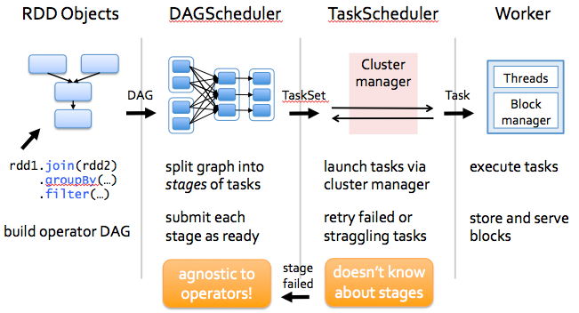

An Introduction to Apache Spark¶
Note
Know yourself and know your enemy, and you will never be defeated – idiom, from Sunzi’s Art of War
Core Concepts¶
Before diving deep into how Apache Spark works, lets understand the jargon of Apache Spark
- Job: A piece of code which reads some input from HDFS or local, performs some computation on the data and writes some output data.
- Stages: Jobs are divided into stages. Stages are classified as a Map or reduce stages (Its easier to understand if you have worked on Hadoop and want to correlate). Stages are divided based on computational boundaries, all computations (operators) cannot be Updated in a single Stage. It happens over many stages.
- Tasks: Each stage has some tasks, one task per partition. One task is executed on one partition of data on one executor (machine).
- DAG: DAG stands for Directed Acyclic Graph, in the present context its a DAG of operators.
- Executor: The process responsible for executing a task.
- Master: The machine on which the Driver program runs
- Slave: The machine on which the Executor program runs
Spark Components¶

- Spark Driver
- separate process to execute user applications
- creates SparkContext to schedule jobs execution and negotiate with cluster manager
- Executors
- run tasks scheduled by driver
- store computation results in memory, on disk or off-heap
- interact with storage systems
- Cluster Manager
- Mesos
- YARN
- Spark Standalone
Spark Driver contains more components responsible for translation of user code into actual jobs executed on cluster:

SparkContext
- represents the connection to a Spark cluster, and can be used to create RDDs, accumulators and broadcast variables on that cluster
DAGScheduler
- computes a DAG of stages for each job and submits them to TaskScheduler determines preferred locations for tasks (based on cache status or shuffle files locations) and finds minimum schedule to run the jobs
TaskScheduler
- responsible for sending tasks to the cluster, running them, retrying if there are failures, and mitigating stragglers
SchedulerBackend
- backend interface for scheduling systems that allows plugging in different implementations(Mesos, YARN, Standalone, local)
BlockManager
- provides interfaces for putting and retrieving blocks both locally and remotely into various stores (memory, disk, and off-heap)
Architecture¶
How Spark Works?¶
Spark has a small code base and the system is divided in various layers. Each layer has some responsibilities. The layers are independent of each other.
The first layer is the interpreter, Spark uses a Scala interpreter, with some modifications. As you enter your code in spark console (creating RDD’s and applying operators), Spark creates a operator graph. When the user runs an action (like collect), the Graph is submitted to a DAG Scheduler. The DAG scheduler divides operator graph into (map and reduce) stages. A stage is comprised of tasks based on partitions of the input data. The DAG scheduler pipelines operators together to optimize the graph. For e.g. Many map operators can be scheduled in a single stage. This optimization is key to Sparks performance. The final result of a DAG scheduler is a set of stages. The stages are passed on to the Task Scheduler. The task scheduler launches tasks via cluster manager. (Spark Standalone/Yarn/Mesos). The task scheduler doesn’t know about dependencies among stages.
